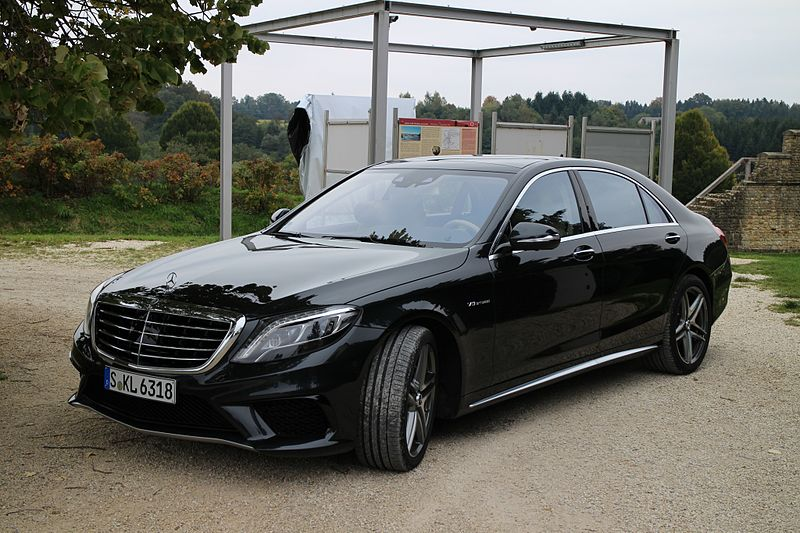
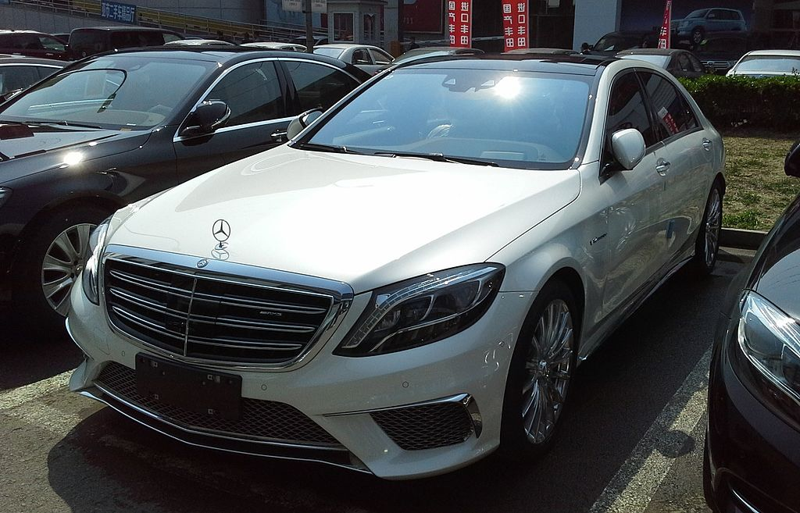
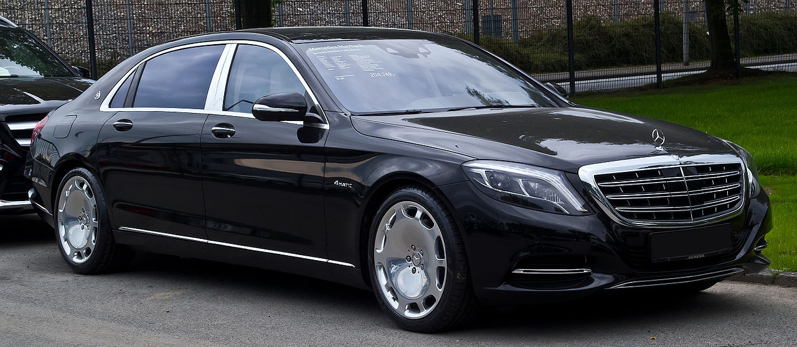

The newest S-Class debuted on 15 May 2013 in Hamburg, Germany and entered production in Sindelfingen, Germany June 2013.
The W222 is the first S-Class using very-high-speed FlexRay optical fiber data bus technology, which interconnects (data fusion) all electrical/electronic systems, particularly the comand online control interface (with Intel Atom processor), MBC road scanning and the multitude of new driver assistance systems, since all these require very high data bit rates.
Mercedes' Active Body Control hydraulic active suspension has been updated with a system dubbed Magic Body Control (MBC) that is fitted with a road-sensing system ("Road surface scan") that pre-scans the road for uneven surfaces, potholes and bumps. Using a stereo camera, the system scans the road surface up to 15 meters ahead of the vehicle at speeds up to 130 km/h (81 mph), and it adjusts the shock damping at each wheel to account for imperfections in the road. Magic Body Control is not available on any of the 4-Matic models, as of Model Year 2017.
S 63 AMG, S 63 AMG 4Matic (2013–)
Available in short (S 63 AMG only) and long wheelbases, they are versions of S-Class saloon with Mercedes-Benz M157 engine rated 585 PS (430 kW; 577 hp)@5500rpm and 900 N·m (664 lb·ft)@2250-3750rpm, 10-spoke or Siena 5 twin spokes AMG forged light-alloy wheels (8.5x19 front and 9.5x19 rear) with 255/45 R 19 front and 285/40 R 19 rear tyres (optional titanium grey and polished 8.5x19 front and 9.5x19 rear wheels with 255/40 R 20 front and 285/35 R 20 rear tyres), lightweight 78 Ah lithium-ion battery (from SLS AMG Coupé Black Series), a weight-optimised AMG high-performance composite brake system, aluminium body panels, a spare wheel recess made of carbon fibre, AMG sports exhaust system, AMG SPEEDSHIFT MCT 7-speed sports transmission, ESP Curve Dynamic Assist, 2 suspension types (AMG RIDE CONTROL sports suspension, AIRMATIC with the Adaptive Damping System ADS PLUS in S 63 AMG 4Matic; "Magic Body Control" with Crosswind stabilization in S 63 AMG with rear-wheel drive), front apron with three large air dams with grille in high-gloss black, flics in high-gloss black on the side air intakes, side sill panels with three-dimensional inserts in silver chrome, AMG sports steering wheel. Other features include AMG door sill panels, AMG floor mats, AMG sports pedals in brushed stainless steel with rubber studs, Ambient lighting, Attention Assist, Collision Prevention Assist, COMAND Online, 10 loudspeakers with Frontbass, Metallic paintwork, Pre-Safe Plus, Tyre pressure loss warning system, LED High Performance headlamps, DISTRONIC PLUS (Driving Assistance package Plus, Night View Assist Plus).
S 65 AMG (2014–)
It is a version of the long wheelbase S-Class sedan with AMG 6.0-litre V12 biturbo engine rated 630 PS (463 kW; 621 hp)@4800rpm and 1,000 N·m (738 lb·ft)@2300-4300rpm, exclusive carbon-fibre/aluminium engine cover, 2 AMG logos on left and right with a centrally positioned Mercedes star, seven-speed automatic transmission, 78 Ah lithium-ion battery, AMG sports suspension with MAGIC BODY CONTROL with Crosswind stabilization, ESP Dynamic Cornering Assist, electromechanical AMG speed-sensitive sports steering with variable steering ratio, 8.5x 20/9.5x20-inch front/rear ceramic high-gloss polished AMG 16-spoke light-alloy wheels (optional 10-spoke forged wheels in polished titanium grey or matt black with a high-sheen rim flange and screw-in fully integrated wheel bolt cover, 5-twin-spoke forged wheels in titanium grey with a high-sheen finish and a black wheel bolt cover), 255/40 R 20 and 285/35 R 20 tyres, optional AMG ceramic high-performance composite braking system (front brake discs with a diameter of 420 millimetres, "AMG Carbon Ceramic" logo at brake callipers), V12 radiator grille with six twin louvres in high-gloss chrome, front apron with three large cooling air intakes, grilles and flics (air deflectors) on the side air intakes in high-gloss chrome and dark paint colours, side sill panels in high-gloss chrome, high-gloss black rear diffuser insert (optional grilles and flics in high-gloss black), "V12 BITURBO" lettering on the wings and the "S 65 AMG" model badge on the boot lid in modern typography, AMG sports exhaust system with two chrome-plated separate twin tailpipes, interior upholstery in exclusive nappa leather with seat upholstery layout in an exclusive diamond-pattern design, delineated perforations in the leather upholstery of the AMG sports seats, no perforations in the nappa leather wherever there is contrasting topstitching, nappa leather roof liner, leather-lined dashboard, door centre panels in a diamond-pattern design, leather-clad roof grab handles, additional wood trim, AMG stainless-steel door sill panels illuminated in white, choice of 5 colour schemes for Exclusive nappa leather upholstery (black, satin beige/espresso brown, nut brown/black, porcelain/black and crystal grey/seashell grey), newly contoured seat cushions and backrests, AMG badges on all four seat backrests, embossed AMG emblems on the front and rear centre console, AMG emblems on the trim of the seat backs, 2-spoke AMG sports steering wheel, contoured steering wheel rim is covered with nappa leather with perforated leather in the grip area, insert with AMG lettering, aluminium shift paddles, analogue clock in an exclusive IWC design (three-dimensional, milled metal hands and genuine metal appliqués on the dial), chrome-plated door pins with AMG logo, AMG instrument cluster with two animated round dials on TFT colour display (AMG-specific lettering and the needles in red/silver, AMG logo in the speedometer with 360 km/h scale (left) and the "V12 BITURBO" lettering in the rev counter (right), animated AMG start-up display is shown on the right-hand display, AMG main menu with digital speedometer and a permanent gear display in the upper section), head-up display, 6.5 x 4.5 centimetres touchpad integrated into the handrest with a cover for the keypad.
Mercedes-Maybach
In 2015, Mercedes brought back the Maybach names as a sub-brand of the Mercedes lineup, representing advanced luxury. The first model produced was the Mercedes-Maybach S-Class, designed to be pitched against the Bentley Mulsanne and Rolls-Royce Phantom. At 5,453 mm (214.7 in) long with a wheelbase of 3,365 mm (132.5 in), the new model is approximately 20 cm (7.8 inches) greater in both dimensions compared to the long-wheelbase S-Class models. The Mercedes-Maybach is available as S 500 and S 600 models (the US received Mercedes-Maybach S 550 4MATIC and S 600 models, with the S 550 having the same 4.7L engine as the S 500 Mercedes-Maybach elsewhere), with 4MATIC optional with the V8 engine and V12 for the latter. Mercedes also claims that the S Class is the worlds quietest production car. The basic car has colour options, and the choice between a rear bench seat or 2 reclining rear seats. Options include air-conditioned, heated and massaging seats; heated armrests; a system to pump Argarwod scent, ionised air around the cabin; First class suite for the rear cabon and a 1540 watt Burmester 3D surround sound system with 24 speakers.